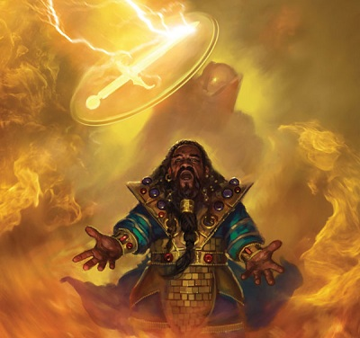
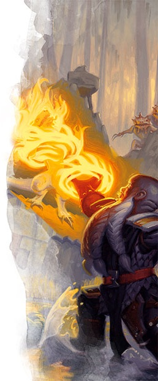
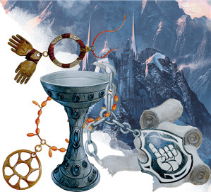

Le clerc D&D 5 pour les nuls
Vous jouez un clerc, un émissaire des dieux. Votre connexion divine vous confère une grande puissance, mais les nombreux sorts et options qui s'offrent à vous peuvent être décourageants. Si la partie la plus importante de D&D est de jouer votre personnage d'une manière qui vous amuse et amuse les autres joueurs, il y a certaines bases pour jouer un clerc que vous devriez connaître pour pouvoir aider votre groupe en combat.
Cette aide de jeu va donc vous présenter les bases du clerc sur les 5 premiers niveaux en se concentrant sur la façon de choisir les sorts et autres capacités de cette classe, car il y a une quantité écrasante d'options à choisir.
Créer votre clerc
Sans aller jusqu'à parler d'optimisation, la première étape pour bien jouer votre classe est de construire votre personnage efficacement.
- Choisissez votre race. N'importe laquelle peut faire un bon clerc, mais préférez celles qui améliorent votre valeur de Sagesse, comme les nains, les elfes des bois, les humains ou les demi-elfes.
- Choisissez la classe de clerc (évidemment !).
- Choisissez des compétences qui correspondent à ce que vous voulez que soit votre personnage.
Quel type de clerc ?
Si vous vous sentez dépassé par les options, rassurez-vous, vous n'êtes pas le seul. Le clerc est en effet l'une des classes les plus variées du jeu, avec sept sous-classes (domaines divins) rien que dans le Manuel des Joueurs. Commencez par réfléchir au rôle que vous voulez remplir au sein du groupe avant de choisir le domaine divin et le dieu que vous voulez suivre. Voulez-vous être un personnage offensif, qui utilise des sorts et l'acier pour détruire ses ennemis ? Un protecteur, qui protège ses alliés sur la ligne de front ? Ou un personnage de soutien, qui soigne ses alliés et améliore leurs capacités de combat ?
Offensif
Le clerc peut sembler un choix étrange si vous voulez infliger de sérieux dégâts, et pourtant cette classe peut faire jeu égal avec les guerriers et les paladins sur le champ de bataille si elle est correctement jouée. Si vous voulez jouer un clerc offensif, pensez au domaine de la Lumière, qui donne le pouvoir de frapper vos ennemis de loin avec le feu, ou au domaine de la Tempête, qui donne à vos armes la puissance de l'orage.
Protecteur
Certains clercs souhaitent atténuer les dégâts sur la ligne de front plutôt que de guérir leurs alliés plus tard. En tant que protecteur, vous devriez porter une armure lourde et invoquer des protections magiques pour protéger vos ennemis. Un clerc du domaine de la Forge (Xanathar’s Guide to Everything) peut bénir les armes et les armures pour se protéger et protéger les autres, tandis qu'un clerc du domaine de la Nature peut faire appel aux éléments pour protéger ses alliés et demander de l'aide au monde naturel. Un clerc du domaine de la Guerre, qui se positionne entre l'offensif et le défensif, se rapproche en fait davantage du rôle de protecteur ; son armure lourde et ses coups précis en font une cible de grande valeur qui est capable d'absorber des coups qui, autrement, iraient sur ses alliés les plus vulnérables.
Soutien
La plupart des clercs tombent dans la catégorie soutien, et vous avez le choix parmi de nombreuses options pour aider les membres de votre groupe à rester en vie, que cela soit en repoussant les ennemis ou en soignant les alliés. Le domaine du Savoir vous accorde des connaissances et vous permet de voir au-delà. Le domaine de la Vie est une sous-classe simple qui renforce vos sorts de soins. Enfin, le domaine de la Duperie vous permet de séduire les ennemis et de vous déplacer à leur insu.
Créer votre clerc - la suite
- Après avoir sélectionné votre sous-classe, placez votre valeur de caractéristique la plus élevée en Sagesse et votre deuxième plus élevée en Force, Dextérité ou Constitution. Choisissez la Force si vous jouez offensif, la Dextérité pour le soutien et la Constitution pour le protecteur. En tant que protecteur, vous aurez également besoin d'une Force de 15 ou plus afin de pouvoir porter une armure lourde sans pénalité.
- Choisissez un historique qui colle avec le concept de votre personnage. C'est une opportunité pour être créatif et vous libérer des stéréotypes religieux !
- Enfin, déterminez votre équipement en fonction de ce qui convient à votre vision du personnage. Notez juste qu'un marteau de guerre est généralement meilleur qu'une masse d'armes et une cotte de mailles meilleure que les autres options d'armure.
Se battre comme un clerc
En tant que clerc, votre capacité la plus puissante est assurément votre faculté à lancer des sorts. Vos armes et votre armure sont utiles (en particulier pour un rôle de protecteur ou offensif), mais vos sorts seront toujours primordiaux. Les clercs connaissent tous les sorts de leur liste de sorts, plus les sorts qui leurs sont accordés en fonction de leur domaine, mais ils ne peuvent en préparer qu'un certain nombre par jour. Vous pouvez par contre changer vos sorts préparés (sauf les sorts mineurs) après chaque repos long. Les conseils qui suivent vous aideront à commencer et sont une bonne base pour ensuite échanger des sorts si vous avez un besoin plus spécifique.
Rappelez-vous aussi que vous ne pouvez préparer qu'un nombre de sorts égal à votre modificateur de Sagesse plus votre niveau dans cette classe. Nous assumerons ici que vous avez un modificateur de Sagesse de +2 au niveau 1. Enfin, n'oubliez pas les sorts de domaine qui vous sont accordés. Ceux-ci sont toujours préparés et peuvent aider à compléter votre arsenal. Si la liste ci-dessous suggère un sort que vous avez en tant que sort de domaine, choisissez simplement un autre sort à préparer à la place.
Offensif
Les clercs ont peu d'options offensives, mais elles sont relativement puissantes. De plus, vos sorts les plus puissants ne ciblent qu'une seule créature. Il est donc préférable d'affronter avec vos armes les ennemis les plus faibles et de conserver vos sorts pour les plus forts.
Au niveau 1, vous apprenez trois sorts mineurs de votre choix, dont flamme sacrée qui vous permettra d'infliger des dégâts à distance lorsque vous ne pouvez ou ne voulez pas utiliser d'emplacements de sorts.
Au niveau 1 encore, préparez les sorts bénédiction, injonction et éclair traçant. Bénédiction permet à vos attaques et à celles de vos alliés de toucher plus souvent. Éclair traçant inflige des dégâts incroyables et permet à vos alliés de faire face plus facilement aux ennemis qui survivent à l'attaque. Injonction permet de mettre en place des attaques faciles ou de vous échapper de situations critiques si vous êtes submergé.
Au niveau 2, préparez le sort blessure. Ce sort est plus faible que éclair traçant, mais il vous permet de lancer des sorts dans une mêlée sans encourir de désavantage au jet d'attaque.
Au niveau 3, vous avez accès aux sorts de niveau 2. Rappelez-vous que vous pouvez lancer des sorts comme éclair traçant avec des emplacements de sorts de niveau supérieur pour augmenter leur puissance. Préparez le sort arme spirituelle. Vous pouvez lancer ce sort avec une action bonus, ce qui vous permet de faire une attaque avec votre arme de corps au corps ou de lancer un sort mineur comme flamme sacrée avec votre action (vous ne pouvez pas lancer deux sorts de niveau 1 ou supérieur lors d'un même tour ; si vous lancez un sort de niveau 1 ou plus avec une action bonus, vous ne pouvez utiliser votre action que pour lancer un sort mineur, pas un autre sort de niveau1 ou plus).
Au niveau 4, utilisez votre Amélioration de caractéristiques pour augmenter votre modificateur de Sagesse à +3 (voire à +4 selon vos valeurs initiales). En outre, vous apprenez un nouveau sort mineur de votre choix.
Au niveau 4 encore, préparez les sorts soins et immobilisation de personne. Soins est un bon sort à avoir sous le coude pour les situations désespérées, mais vous ne pouvez pas l'utiliser aussi efficacement qu'un clerc du domaine de la Vie. Immobilisation de personne est un excellent sort, même utilisé offensivement, car les attaques contre une créature adjacente paralysée sont des coups critiques automatiques. Pensez à lancer arme spirituelle, puis à votre prochain tour utilisez votre action pour lancer immobilisation de personne sur une créature, puis votre action bonus pour l'attaquer avec votre arme spirituelle !
Le niveau 5 marque une augmentation importante de puissance, car il donne accès aux sorts de niveau 3. Malheureusement, la plupart des sorts de clerc de ce niveau sont défensifs ou axés sur le soutien. Vous devrez donc compter sur vos sorts de domaine pour obtenir de la puissance offensive (le domaine de la Lumière accorde boule de feu). Préparez le sort malédiction, un sort flexible qui permet d'améliorer ses dégâts contre une créature ou de rendre plus difficile le fait d'être touché par une créature.
Protecteur
Vous voulez protéger vos alliés en prenant des coups à leur place. Pour cela, vous devez être sur la ligne de front avec une armure lourde et un bouclier. Vos ennemis auront ainsi du mal à vous ignorer et il leur sera difficile de vous toucher. Vos sorts se concentrent de fait sur la protection proactive de vos alliés, plutôt que de soigner leurs blessures.
Au niveau 1, vous apprenez trois sorts mineurs de votre choix, dont résistance. Résistance vous aidera à renforcer le prochain jet de sauvegarde d'un allié s'il est lancé juste avant le début d'un combat.
Au niveau 1 encore, préparez les sorts fléau, injonction et blessure. Avec fléau, vos ennemis auront du mal à vous toucher avec leurs attaques. Injonction vous permet d'arrêter un ennemi qui attaque vos alliés les plus faibles. Enfin, blessure vous permet d'infliger de sérieux dégâts au corps à corps, vous qui voulez toujours être en première ligne.
Au niveau 2, préparez mot de guérison. Puisque vous pouvez lancer ce sort en tant qu'action bonus, vous pouvez soigner un allié à distance et faire une attaque durant le même tour.
Au niveau 3, vous avez accès aux sorts de niveau 2. Rappelez-vous que vous pouvez lancer des sorts comme mot de guérison avec des emplacements de sorts de niveau supérieur pour augmenter leur puissance. Préparez lien de protection, qui vous permet de prendre la moitié des dégâts que subit un allié de votre choix, ce qui vous permet de maintenir un allié en combat plus longtemps.
Au niveau 4, utilisez votre Amélioration de caractéristiques pour augmenter votre modificateur de Sagesse à +3. Si votre modificateur de Sagesse est déjà de +3, prenez le don Sentinelle pour devenir un meilleur défenseur au corps à corps. En outre, vous apprenez un nouveau sort mineur de votre choix.
Au niveau 4 encore, préparez cécité/surdité (et aide si vous avez augmenté votre valeur de Sagesse à ce niveau). Aide vous permet d'augmenter efficacement la durabilité de vos alliés en leur accordant des points de vie temporaires. Cécité/surdité peut sévèrement neutraliser un ennemi en l'aveuglant. Les lanceurs de sorts ennemis détestent être aveuglés car un des inconvénients majeurs d'être aveuglé est que l'on ne peut plus cibler les créatures avec des effets qui obligent à voir la créature, comme la plupart des sorts.
Le niveau 5 marque une augmentation importante de puissance, car il donne accès aux sorts de niveau 3. Préparez esprits gardiens, qui rend difficile et douloureux le fait de vous passer devant.
Soutien
C'est le rôle que la plupart des gens envisagent quand ils veulent jouer un clerc. Une chose que vous devez savoir avant de jouer ce rôle, cependant, est que vos sorts de soins ne dépasseront que rarement les dégâts infligés par vos ennemis. En combat, vous êtes plus efficace lorsque vous affaiblissez vos ennemis ou leurs infligez des dégâts à distance, car même si cela s'apparente à un rôle offensif, sachez qu'à D&D la meilleure défense est une bonne attaque. En tant que soutien de votre groupe, n'utilisez vos soins en combat que lorsque cela est absolument nécessaire pour garder vos alliés en vie. Sinon, faites-le une fois le combat terminé.
Au niveau 1, vous apprenez trois sorts mineurs de votre choix, dont stabilisation. Stabilisation vous aidera à sauver vos alliés (ou des PNJ) lorsque vous n'avez plus de sort.
Au niveau 1 encore, préparer les sorts soins, éclair traçant et bouclier de la foi. Soins est votre base, il vous permet de guérir efficacement vos alliés. Si vous êtes un clerc du domaine de la Vie, prenez mot de guérison à la place, puisque votre caractéristique Disciple de la vie augmente le faible nombre de points de vie que ce sort restaure habituellement. Éclair traçant vous aidera à infliger des dégâts aux rangs arrières. Bouclier de la foi vous permet d'améliorer la classe d'armure de vos alliés, les rendant moins susceptibles de subir des dégâts.
Au niveau 2, préparez le sort protection contre le mal et le bien si votre campagne semble inclure des ennemis surnaturels comme des morts-vivants ou des aberrations. Sinon, préparez le sort bénédiction, plus utile généralement.
Au niveau 3, vous avez accès aux sorts de niveau 2. Rappelez-vous que vous pouvez lancer des sorts comme soins avec des emplacements de sorts de niveau supérieur pour augmenter leur puissance. Préparez restauration partielle, qui met fin à un état tel qu'un poison ou une paralysie affectant une créature.
Au niveau 4, utilisez votre Amélioration de caractéristiques pour augmenter votre modificateur de Sagesse à +3 (voire à +4 selon vos valeurs initiales). En outre, vous apprenez un nouveau sort mineur de votre choix.
Au niveau 4 encore, préparez amélioration de caractéristique et immobilisation de personne. Amélioration de caractéristique est un sort flexible qui peut aider les phases de combat, d'exploration et d'interaction. Immobilisation de personne est un sort généralement puissant, et encore plus puissant si vous le lancez en étant loin des ennemis, comme devrait l'être un personnage de soutien, car il est difficile de briser votre concentration si l'on ne peut pas vous atteindre.
Le niveau 5 marque une augmentation importante de puissance, car il donne accès aux sorts de niveau 3. Préparez le sort lueur d'espoir qui vous permet de maximiser les soins donnés à vos alliés. Vous pouvez également changer l'un de vos sorts préparés pour mot de guérison de groupe, qui vous aidera à restaurer les points de vie de nombreux alliés à la fois.
Personnaliser son clerc
Il n'y a pas de bonnes façons de créer son personnage, ni de bonnes façons de jouer, parce que jouer votre personnage dépend énormément de la personnalité que vous lui imaginez. Toutefois, si vous avez suivi ces conseils et avez créé un clerc efficace, mais que vous le trouvez trop générique, revenez en arrière et changez quelque chose, un sort, une valeur de caractéristique, pour le faire sortir du lot.
Utilisez les mécaniques du jeu pour créer un personnage unique et intéressant, sinon vous allez m'entendre chanter « clerc générique » dans votre tête chaque fois que vous allez lancer un sort.
À soigner maintenant !
Basé sur un article de James Haeck, traduit par blueace